Overview
The Glass Shader for CRYENGINE hosts an array of options which allows you to fully customize the appearance of glass objects, including refraction effects, tint effects, fog effects and more.
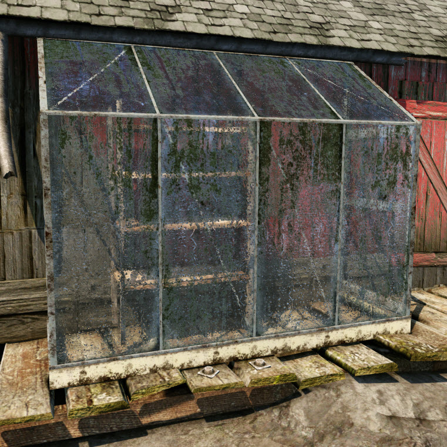 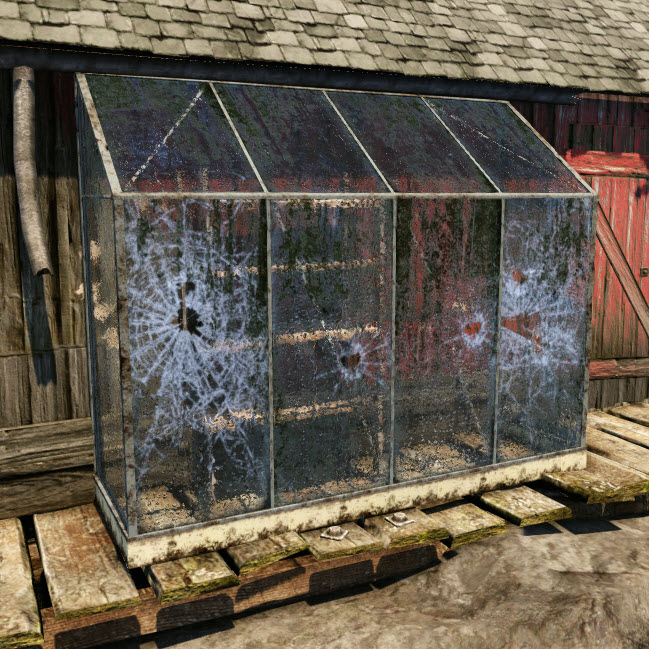
Basic Information and Limitations
- The new glass shader is ALWAYS refractive, to enable its high-end blending.
- If you really want to make alpha-blended, non-refractive glass you can use the Illum shader as described here.
- However the new glass shader will hook up to the new glass breakage code, so only do that if it's unbreakable glass.
- The lighting in the new shader is much more consistent with non-transparent objects than the old glass shader was. However, there are still some limitations, some of which will hopefully get fixed in the future:
- Ambient diffuse lighting from cubemaps is currently not taken into account.
- The glass shader always uses the sky color for ambient lighting, even when it should really be using the ground color or a mixture of the two.
- Deferred lights (e.g. all lights except the sun) cannot affect any transparent materials, including the glass shader.
- The glass shader cannot receive sun shadows. Best thing to do is check the Use Vertex Alpha to Fake Sun Shadows option and paint zero/black vertex alpha in shadowed areas (see below).
Directions for use
Tinting
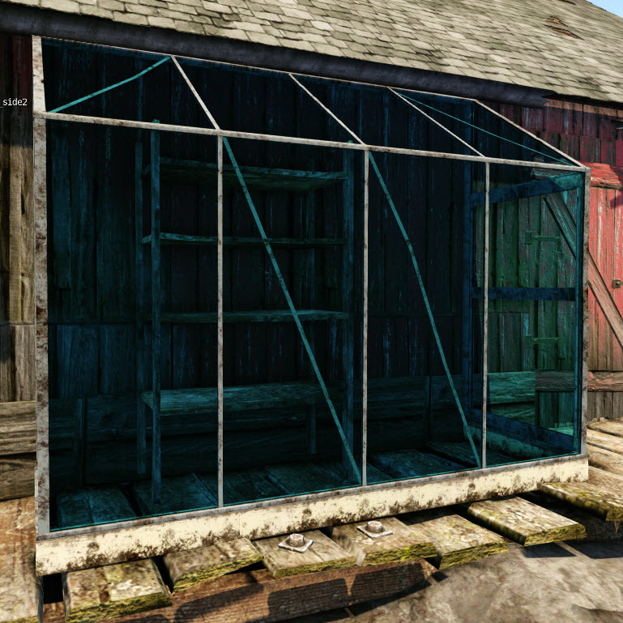
- In its most basic and cheapest form, with none of the options enabled, the glass shader simply tints and refracts what's behind it using a normal map in the normal map slot.
- It will also pick up specular from the sun.
- With the Tint Cloudiness parameter at 0, the tint is completely multiplicative - e.g. it will always darken what's behind it.
- The default Tint Color is white which has no effect when Tint Cloudiness is set to 0.
- The above glass has a darker, greener Tint Color.
Cloudiness
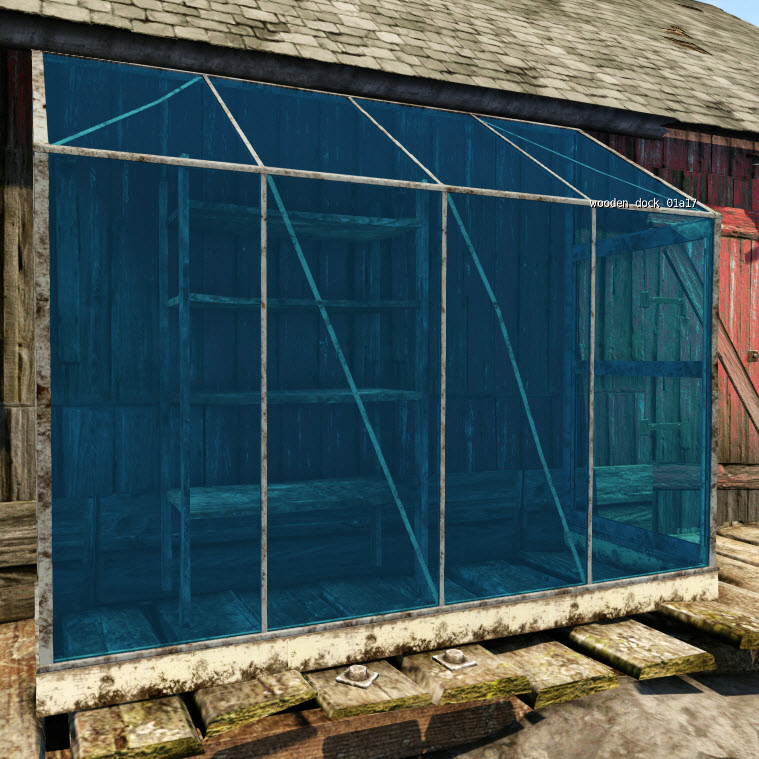
- Increasing the Tint Cloudiness parameter controls how cloudy the glass is, and how much diffuse lighting is applied to the Tint Color.
- Small values work best, especially in bright sunlight.
Normal Map Tiling and Scale
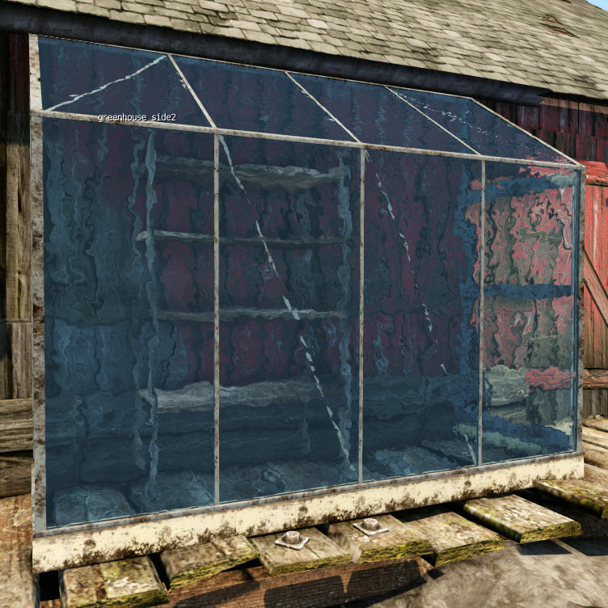
- You can use the Bump Map Tiling and Bump Map Scale parameters to control how strong the normal map is, and how many times it is repeated.
- Using tiling values less than 1 can be useful for introducing a subtle bump across a large number of tiling windows, for example on a glass skyscraper.
Reflection
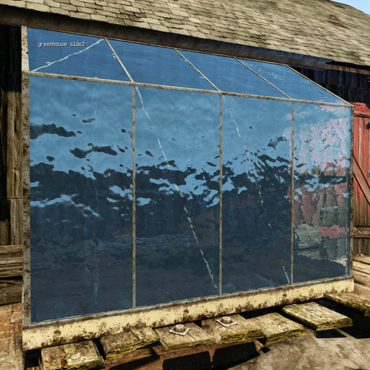
- In most cases, you will want your glass to be reflective. To enable reflection tick the Environment Map check box in the Shader Generation Params section of the Material Editor.
- You will need to specify a cubemap to use for the reflection, as transparent objects cannot pick up deferred cubemaps. Generally, you should set it up to automatically use the nearest cubemap from the level like this:
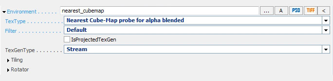
- Doing this will mean you can use the material throughout the level and it should get the cubemap right for the location most of the time.
- IMPORTANT: Currently, due to an issue with the material editor, you will need to set your opacity to 99 rather than 100 if you want to use the Nearest Cube-Map option for your environment map. This won't affect the look of the shader.
- If instead you want to use a specific cubemap, you can just point it to the texture as you would normally.
Fresnel
- All the normal fresnel falloff settings apply to reflections and specular highlights on the glass shader.
- It's good practice to leave Fresnel Scale at the default of 1, and adjust Fresnel Bias and to a lesser extent Fresnel Power to get the desired amount of front-facing reflection.
Getting Dirty
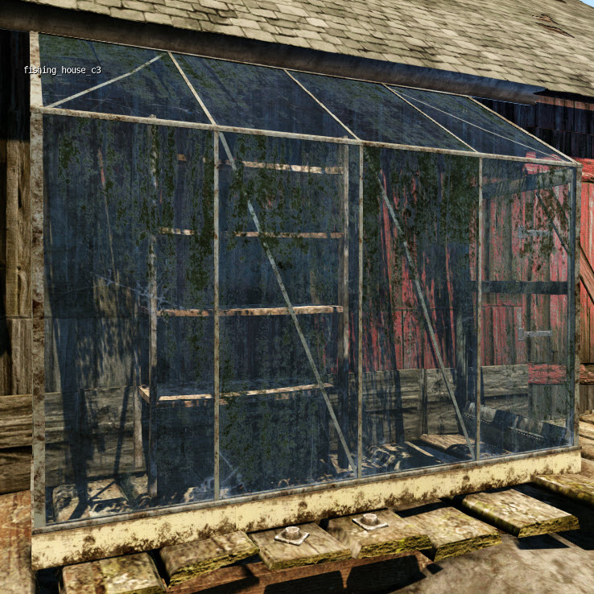
- By checking Use Diffuse Map - requires alpha channel and supplying a texture in the Diffuse slot you can add a dirt layer to your glass.
- The alpha channel determines the opacity of the dirt.
- This map can also be used for other opaque things on the surface such as stickers, leading etc.
Dirt Shadowing
- It is possible to cast an alpha-tested shadow from the diffuse map.
- Adjusting the Alpha Test parameter will adjust the threshold at which the map shadows, but will not affect the appearance of the actual glass surface.
Backlighting
- The alpha channel of the diffuse map also controls the amount of backlighting - the thicker the dirt, the less light will get through.
- This can be adjusted using the Back light scale parameter.
Specular Map from Diffuse Alpha
- Whilst you can provide a separate specular map (see below), you can save memory by generating the spec map from the diffuse alpha channel - eg dirty areas are not shiny, clean areas are.
- Use the DiffAlpha to Spec Bias and DiffAlpha to Spec Mult parameters to control the way the spec map looks.
Specular Map and Tint Masking
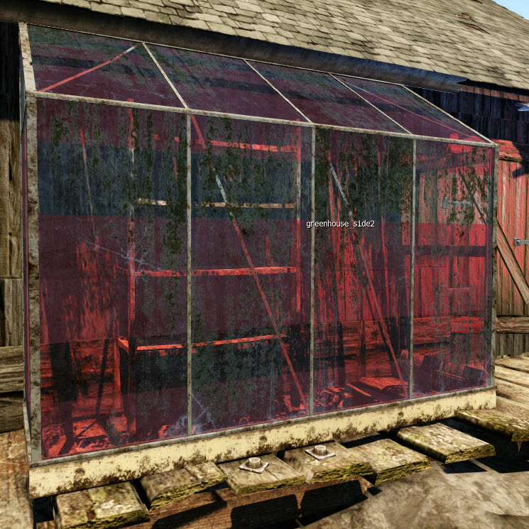
- If you want to use a specific specular map rather than generating it from the diffuse alpha, you can simply drop one into the specular map slot.
- However, you can also use this map for more than just specular by ticking the Spec map R/G/B = Tint/Cloudiness/Spec option.
- This allows you to use each channel of the map to control a different parameter.
- The red channel controls overall tinting (allows for certain areas to be tinted more than others)
- The green channel controls cloudiness (in this case the Tint Cloudiness acts as a maximum value which can be reduced using the texture).
- The blue channel is a monochrome specular map.
Cloudiness Masks Gloss
- The Cloudiness Masks Gloss parameter appears when you use a Tint/Cloudiness/Spec map and allows you to make cloudy areas less glossy than non-cloudy areas.
- This can give the appearance of glass where the frosting has been applied as a film on the surface with different reflective properties from the underlying glass.
Tint Color Map
- By putting a map in the Custom slot and checking Use Tint Color Map you can have multi-colored tinting.
- This is only really useful for stained glass and the like, which is a fairly rare case but is necessary from time to time.
- It's probably advisable to not use this in conjunction with a Tint/Cloudiness/Spec map in order to keep the cost reasonable on the console.
Refraction Blur
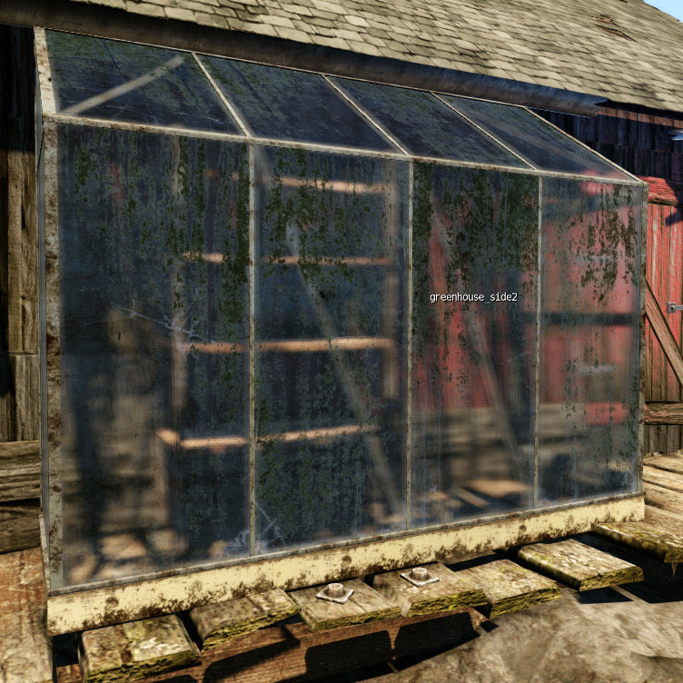
- Ticking Blur Refraction will blur any objects seen through the glass.
- The amount of blur can be controlled using the Blur Amount slider.
- This effect only works on PC.
Cloudiness Masks Blur
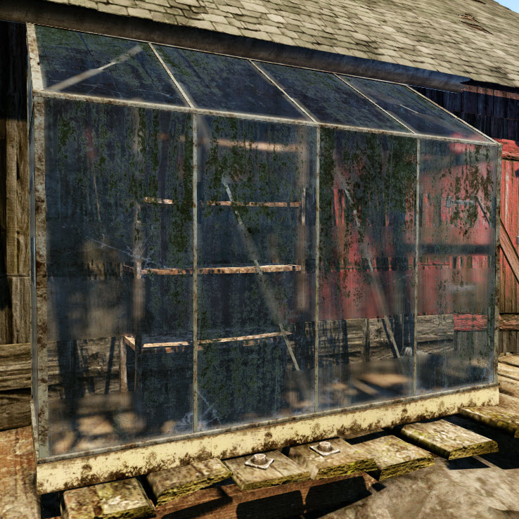
- The Cloudiness Masks Blur parameter allows you to limit blurring to parts of the glass that are cloudy - as defined by a Tint/Cloudiness/Spec Map.
- This can mimic the effect of diffusion films applied to parts of the glass.
Depth Fog
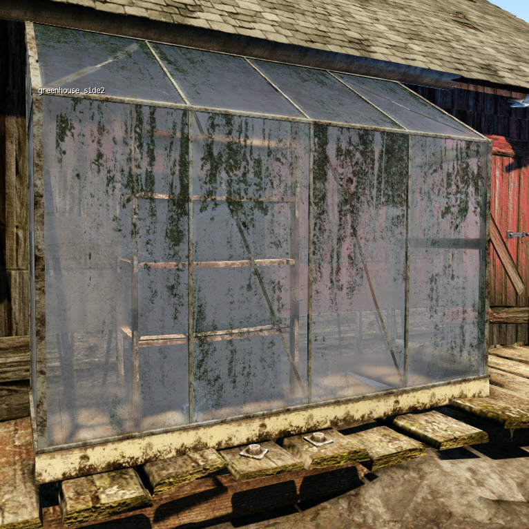
- Checking Depth Fog allows you to make it look like there is a fog volume behind the glass, but is probably cheaper and less error-prone than actually putting a fog volume behind the glass.
- Be aware however that this relies on the glass surface being there, so do NOT use on breakable glass unless you want it to look really weird when it breaks.
- Fog Color controls the color of the fog, Fog Density controls the overall density, and Fog Cutoff End Depth allows you to control the distance at which the fog stops falling off.
- To be honest this is probably of fairly minimal use, but thought I might as well leave it in just in case!
Use Vertex Alpha to Fake Sun Shadows
- As noted above, transparent shaders cannot currently receive sun shadows.
- To work around this, in the case of glass which is in a fixed position and where the time of day doesn't change, you can use this option and manually paint in zero/black vertex alpha in shadowed areas.
- This is very useful on buildings with lots of glass where part of the building is in shadow, or on large panes of glass with shadows falling across them.
- As you can see, it immediately improves the consistency of the lighting, even when not done particularly accurately.
Disable Lights
- The Disable Lights flag allows you to completely disable sunlight affecting the shader (other lights don't affect it anyway because they are all deferred and can't affect transparent objects).
- This is useful for situations where the glass is in shadow, although you can also use the "Use Vertex Alpha to Fake Sun Shadows" option.
- Unlike the old glass shader, ambient lighting will still be applied and the intensity of the reflections will not be affected, so the lighting should be fairly consistent - it just requires the artist to manually apply different materials to the areas in shadow.
- Of course, the case where a piece of glass is half in sun, half in shadow will still look a bit wrong - in this case, the Use Vertex Alpha to Fake Sun Shadows option is a better choice.
- Checking Disable Lights will make the shader cheaper, however, so in the case where a piece of glass will never be affected by the sun, it's best practice to use this option.
Addendum - Pre-Cracked Glass
- If you want to make pre-cracked glass, you can adjust the normal map accordingly and use a Tint/Cloudiness/Spec map to increase the cloudiness around the cracks (which is basically what the shader crack decals do).
- This is cheaper than adding a decal in the shader and will look much nicer than adding your own decals in max.
- Be aware that the example decal diffuse maps use different channels for different things than the Tint/Cloudiness/Spec map you will be using.
- If you wanted to make pre cracked glass you would put the cloudiness around the cracks in the GREEN channel of the Tint/Cloudiness/Spec map - on the decal maps it's in the RED channel.
- The normal maps were basically made by getting a mask based on a photograph of cracked glass, putting random normal noise in the cracks, then adding some overall broad strokes of random normal map colours into the cracks (just sampled from a normal map of a sphere) so that different cracks picked up the light at different angles.
- Then some subtle changes in angle were added to the unbroken bits of glass between the cracks (again manually painted).
References
Some interesting information/links: